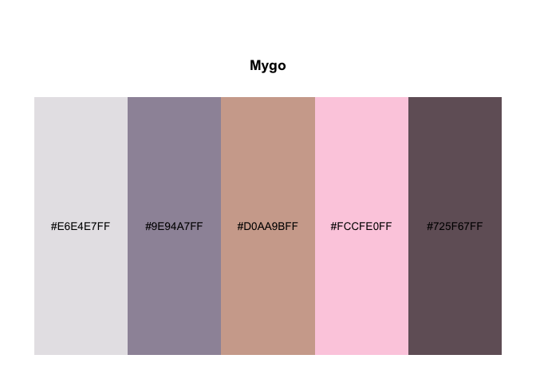
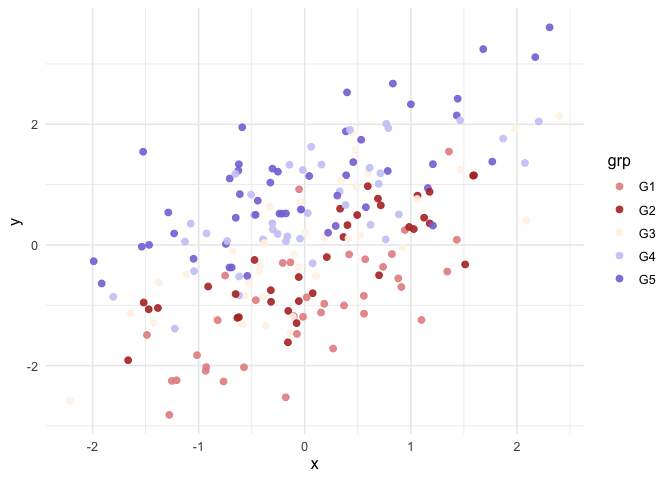

“我的嘉心糖都是很厉害的人”——嘉然(Diana)

A lightweight R package providing built-in discrete palettes based on the representative colors of A-SOUL, with drop-in ggplot2 scales. The package also contains palettes of It’s Mygo, Ave Mujica, and Bocchi the Rock!.
Features
- Built-in discrete palettes (named palette registry)
-
ggplot2scales:scale_color_anime()andscale_fill_anime() - Palette utility functions:
-
anime_palettes()list available palettes -
pal_anime()returns a palette function (function(n)) in ggsci style -
show_anime()previews palettes with palette name and HEX codes
-
Installation
Install the development version from GitHub:
# install.packages("remotes")
remotes::install_github("lingxuko/gganime")
#> Using GitHub PAT from the git credential store.
#> Skipping install of 'gganime' from a github remote, the SHA1 (b00919e8) has not changed since last install.
#> Use `force = TRUE` to force installationPalette Preview
library(gganime)
gganime_palettes()
#> [1] "Asoul" "Diana" "Bella" "Eileen" "Ava" "Carol" "Mygo" "Mujica"
#> [9] "Bocchi"


It’s Mygo Palette:
show_anime("Mygo")
Use with ggplot2:
library(ggplot2)
#> Warning: package 'ggplot2' was built under R version 4.4.3
library(gganime)
set.seed(1)
df <- data.frame(
x = rnorm(200),
grp = factor(sample(paste0("G", 1:5), 200, replace = TRUE),
levels = paste0("G", 1:5))
)
grp_effect <- setNames(c(-1.0, -0.4, 0.0, 0.5, 1.2), paste0("G", 1:5))
df$y <- 0.7 * df$x + grp_effect[as.character(df$grp)] + rnorm(200, sd = 0.6)
ggplot(df, aes(x, y, color = grp)) +
geom_point(size = 2, alpha = 0.9) +
scale_color_anime(palette = "Asoul") +
theme_minimal(base_size = 12)